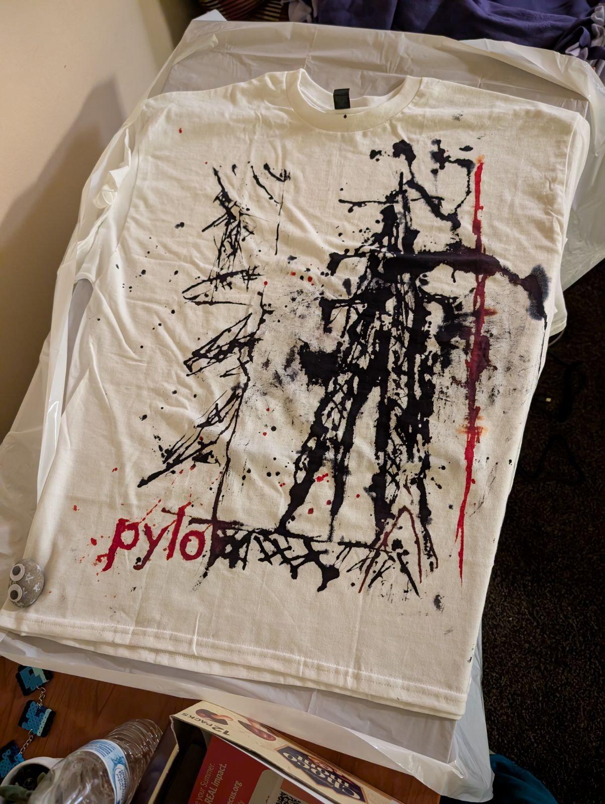

Nia Lam.
Hi, I'm Nia! I'm a sophomore at UW-Madison, double majoring in Computer Science & Information Science with a Digital Studies certificate.
Get StartedI love drawing, and usually do so with just pencil & paper. I also indulge in watercolor painting, scrapbooking, and stamp carving! My subjects tend to be people, which can range from attempts at croquis, various stylizations, or realism.
I've been learning how to cook now that I live off campus, and have enjoyed trying new recipes, albeit not often and rather simple. Dishes include Chinese tomato & egg, cacio e pepe, and miso udon (simple, but filling). I also am just a huge foodie in general; I love trying new cuisines and restaurants!
I play a variety of games, including card games, mahjong, mafia, Minecraft, and Nintendo games! I recently learned to play Cambio and changed the rules to include two decks of cards, which is quite fun! I finally bought Minecraft for myself and received a Switch as a gift this year, both of which I'd love to play more given the time.

My recent favorite is Beabadoobee's new album, Pylon! It's a gorgeous album from start to finish, written with feelings of longing, confliction, and confusion. I love the indie/rock sound; some of my favorite tracks are In Motion, Pylon, Radio, Despite That, and Satellite. I actually recently DIY-ed a T-shirt roughly imitating one of the pylon shirts for her Powerlines Tour. I also love the design of the album cover, the imagery with pylons, and the overall aesthetics.
One of my college goals is to study abroad! I'm not sure when or where yet though.
I hope to become a Software Engineer or a Product Designer, but I'm always exploring so who knows.